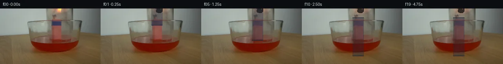

![首帧]()

Round 00
2026-11-06T09:23:23.662286+00:00像素候选变化代码 +250/−0inspection 更新
pixels 79c3864f901525ed · code 47b0d2d14da56a51
查看本轮 generate.py 真实 diff
--- previous/generate.py +++ current/generate.py @@ -0,0 +1,250 @@ +"""PixelWorld-Text: Glass jar lowered over lit matchsticks in a bowl of red liquid. + +Animation: 20 frames, 256×144, 4 fps, 5 seconds. +Frame 00 == first_frame.png (unaltered). +Frames 01–19: glass jar descends, covers matchsticks, flames extinguish. +""" + +import numpy as np +from PIL import Image +from pathlib import Path +import artifact_io + +H, W = 144, 256 +N_FRAMES = 20 + +# ── Load first frame ────────────────────────────────────────────── +case_dir = Path(__file__).parent +frame00 = np.array(Image.open(case_dir / "first_frame.png")).astype(np.float32) +assert frame00.shape == (H, W, 3), frame00.shape + +# ── Jar parameters ──────────────────────────────────────────────── +JAR_CENTER_X = 143 # horizontal center of jar +JAR_HALF_W = 14 # half-width (jar spans 129–157) +JAR_HEIGHT = 100 # total jar height in pixels +JAR_RIM = 3 # rim thickness in pixels +JAR_EDGE = 2 # edge thickness +JAR_TINT = np.array([25, 38, 58], dtype=np.float32) # dark blue-gray glass + +# In frame 00, jar bottom is at row 43 (jar spans rows 43-100 = -57 to 43) +JAR_BOTTOM_FRAME0 = 43 + +# Animation: jar moves from bottom=43 to bottom=123 over 10 frames (0.25s each) +# Total descent: 80 px over 10 frames = 8 px/frame +DESCENT_RATE = 8.0 +DESCENT_FRAMES = 10 # frames 0–10 for descent +SETTLE_BOTTOM = 123 # final bottom position + +# Flame region +FLAME_Y_MIN = 0 +FLAME_Y_MAX = 12 # flame + glow extends to about row 12 +FLAME_X_MIN = 140 +FLAME_X_MAX = 157 + +# Matchstick body region (for smoke dimming) +MATCH_Y_MIN = 0 +MATCH_Y_MAX = 84 +MATCH_X_MIN = 128 +MATCH_X_MAX = 160 + +# Bowl red liquid region +BOWL_Y_MIN = 82 +BOWL_Y_MAX = 112 +BOWL_X_MIN = 83 +BOWL_X_MAX = 194 + + +# ── Helper: inpaint the original jar region from frame 00 ───────── +def inpaint_original_jar(img): + """Linearly interpolate across the jar region (rows 34–43, cols ~129–157) + to remove the jar from frame 00 so we can place it at a new position.""" + result = img.copy() + x0 = JAR_CENTER_X - JAR_HALF_W - 1 # 128 + x1 = JAR_CENTER_X + JAR_HALF_W + 1 # 158 + + for c in range(x0, x1 + 1): + # Interpolate between row 33 (above jar) and row 44 (below jar) + for r in range(34, 44): + t = (r - 33) / 11.0 # 0 at row 33, 1 at row 44 + above = img[33, c] + below = img[44, c] + result[r, c] = (1 - t) * above + t * below + return result + + +# ── Helper: compute jar alpha mask at a given position ──────────── +def jar_alpha_mask(jar_top_y, jar_bottom_y): + """Return alpha mask (0=fully transparent, 1=fully opaque) for jar region.""" + alpha = np.zeros((H, W), dtype=np.float32) + + # Jar spans from jar_top_y to jar_bottom_y + y0 = max(0, int(jar_top_y)) + y1 = min(H, int(jar_bottom_y) + 1) + + if y1 <= y0: + return alpha + + x0 = max(0, JAR_CENTER_X - JAR_HALF_W) … diff truncated; 163 more lines …